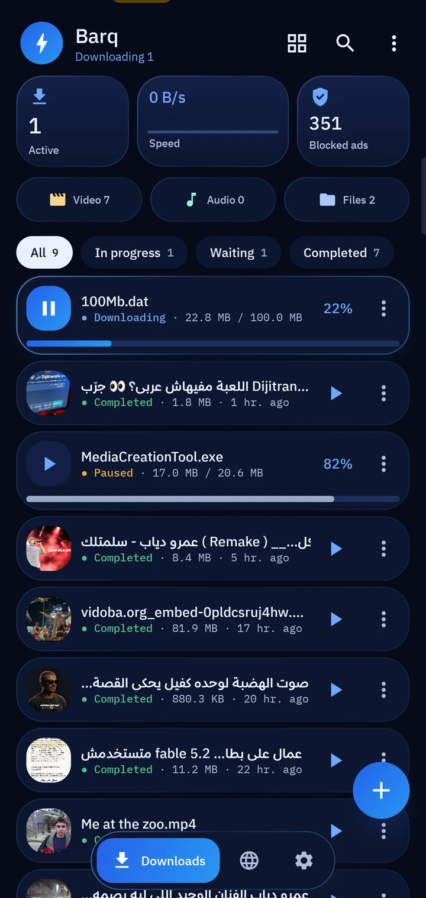
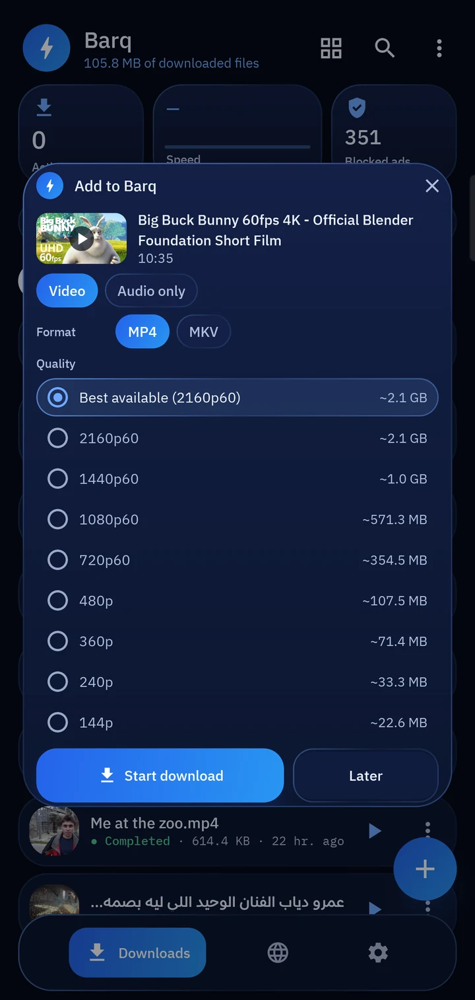
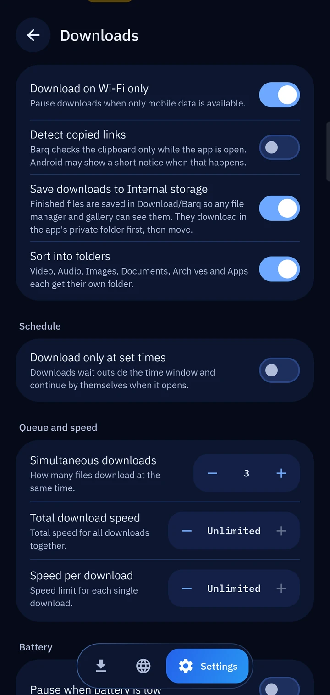
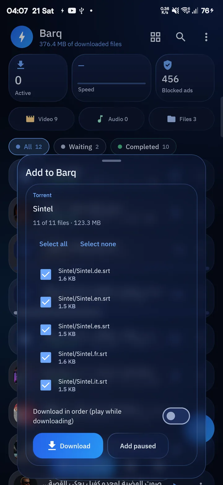
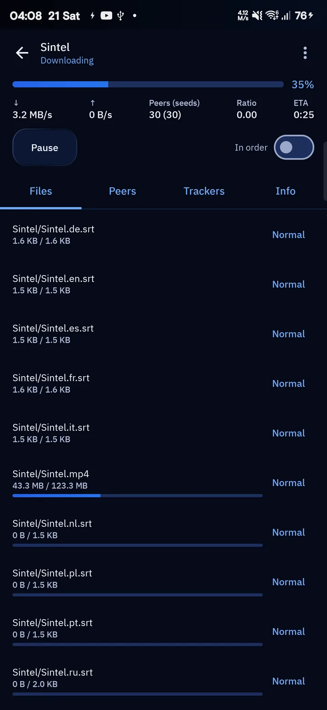
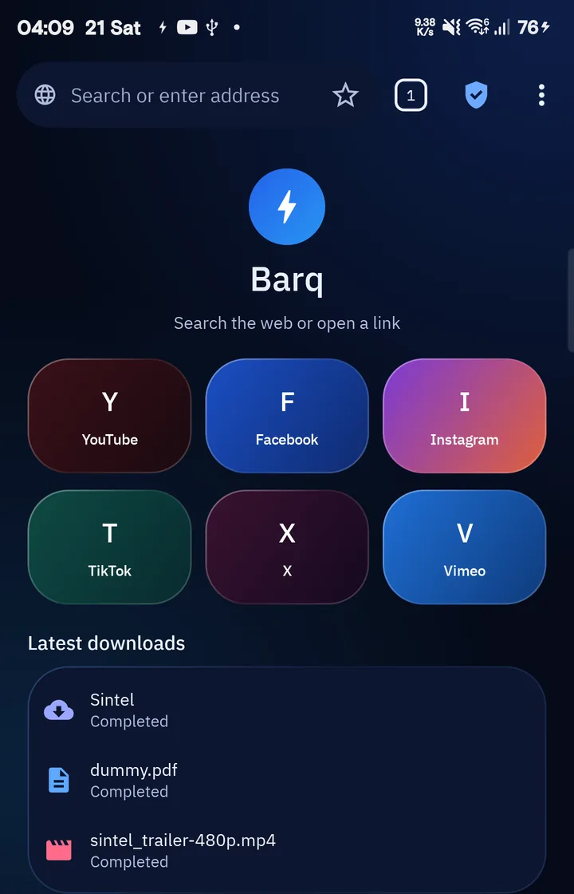
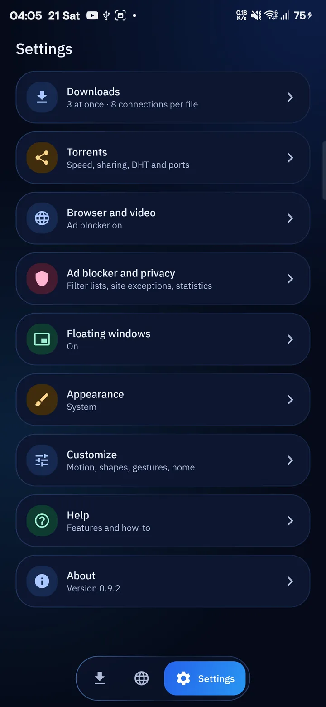
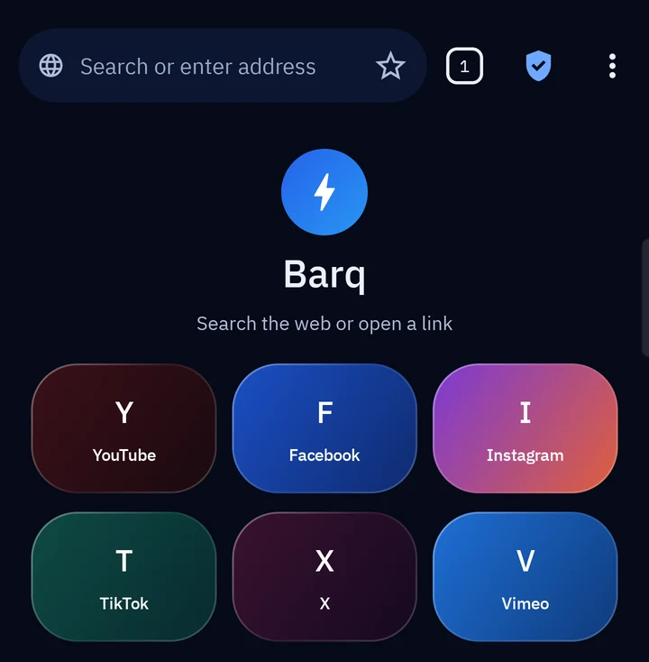
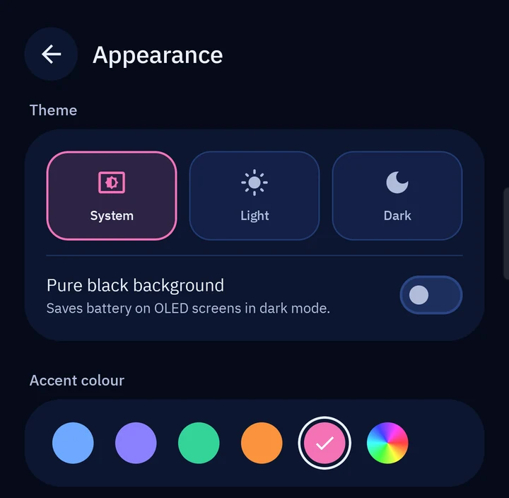
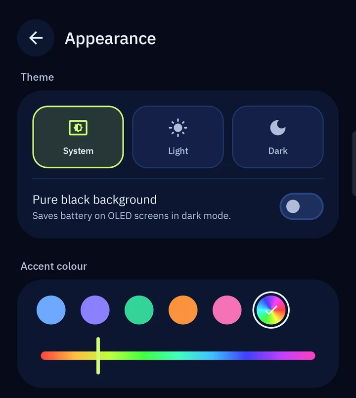

Fast downloads
Each file is split into parts that download at the same time. Downloads pause, resume and retry by themselves.
Barq is a smart download manager for Android and Windows. Files and videos in the best quality, a browser that spots links, and a floating window to keep an eye on everything.




Every image here was captured from the app itself on a real phone.




A strong download engine, a browser and simple controls, without the clutter.
Each file is split into parts that download at the same time. Downloads pause, resume and retry by themselves.
YouTube, Facebook, Instagram, TikTok and streaming players. Pick the quality or keep only the sound, or grab a whole playlist.
Open any site in Barq: the videos and files on the page show up on the download button.
EasyList, EasyPrivacy and hosts lists, popup blocking, and a Shield to turn it off for one site.
Share any link to Barq: files go to the download window, pages open in the browser.
Progress, speed and a quick pause over any app, even inside the Barq browser.
Lost the internet? Downloads wait and continue by themselves. Wi-Fi only and low battery rules are there too.
Pick the hours downloads may run (say, at night). Files are sorted into Video, Audio, Images, Documents and Apps folders.
Magnet links and .torrent files with a file picker, peers, trackers, speed limits and sharing, like uTorrent.
The Downloads search box also takes a link: a file downloads, a page opens in the browser. Nothing found? Search Google in one tap.
A Light mode for weak phones and a built-in check for new versions.
App colour, animations, corners, text size and the bottom bar all have a setting.
Follow progress and size, and pause with one tap, above any app.
A start page with your favourite sites, an ad blocker and a download button that finds files.

Four short loops that show the main ideas. They are animations drawn for this page, not screen recordings.
Paste a link in the + button or in the search box, share it from another app, open a magnet, or search Google when nothing matches.
Open the page and play the video first. Only then the download button shows, so there is no confusing button on pages without a video.
Choose which files to get, watch peers connect, limit the speed, and keep sharing after it finishes.
A live counter shows what was stopped on the page, and you can turn it off for one site from the shield.
Blue is the default, but you can choose another colour, or dial in any colour with the slider, and the whole app follows. Try it here: this page changes colour too.
In the app: blue, violet, green, orange, pink, and a custom colour from a hue slider.


In any app tap Share and choose Barq, or paste the link inside the app.
A small window shows the qualities with their sizes. Choose and start, or save it for later.
Downloading carries on in the background. Your file waits in Download/Barq.
SHA-256: —
Barq DM brings the same look and the same speed to Windows, with a browser extension that takes your downloads.
Files are split into parts that download together and resume after a cut or a restart.
For Chrome, Edge and Firefox: Barq DM takes the downloads and the videos of the page, with an ad blocker.
Videos from popular sites in the quality you pick, magnet links and .torrent files.
Queues, a scheduler and two looks (Barq or Classic). New versions install after you agree.
Installer or portable copy. Windows 10 and 11, 64-bit.
Yes, the app is free.
Android 10 and newer.
Notifications show progress, display over other apps is for the floating window, photos and videos let it show previews, and the battery exemption lets long downloads finish. It asks once at the start, and you can change them in your phone's settings.
In Download/Barq on your internal storage, sorted into folders by type (video, audio, images and so on). You can turn the sorting off in Settings.
Public videos from popular sites, yes. Content protected by DRM, or videos that need you to sign in, may not download.
Yes. The app and this site are in English and Arabic, and the layout flips to right-to-left on its own.